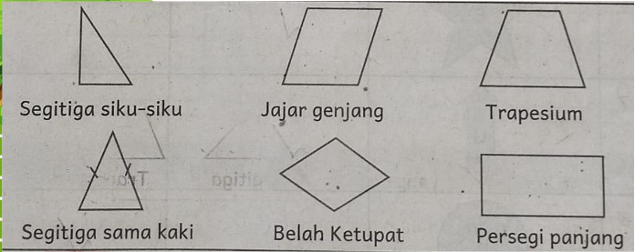

Mengenal Segi Banyak
segi banyak adalah bangun datar tertutup yang dibatasi oleh ruas garis. Segi banyak terjadi dengan menghubungkan beberapa titik satu Sama lain yang tidak terletak pada satu garis lurus. Nama bangun segi banyak sesuai dengan banyak sisinya.
SEGI BANYAK BERATURAN
Menurut bentuknya segi banyak dibedakan menjadi dua yaitu segi banyak beraturan dan segi banyak tak beraturan. Segi banyak beraturan yaitu segi banyak yang semua sisinya memiliki ukuran panjang yang sama dan semua besar sudutnya sama bangun segi banyak beraturan disebut juga poligon berikut merupakan contoh segi banyak beraturan.
SEGI BANYAK TAK BERATURAN
Segi banyak tak beraturan yaitu bangun segi banyak yang panjang sisi dan ukuran sudut tidak sama. berikut contoh bangun segi banyak tak beraturan
